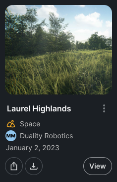
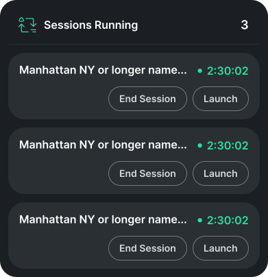
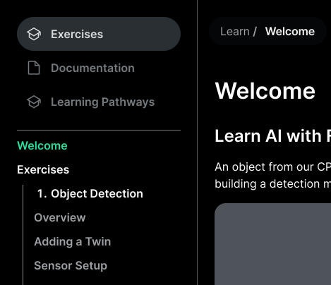
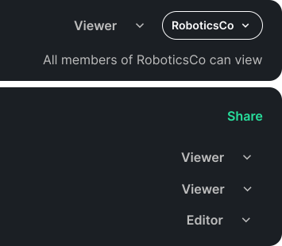
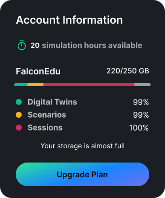
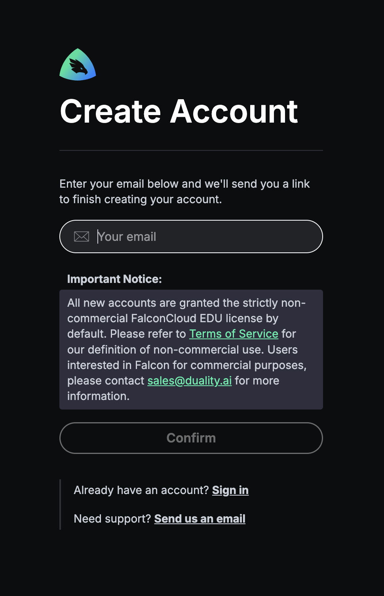
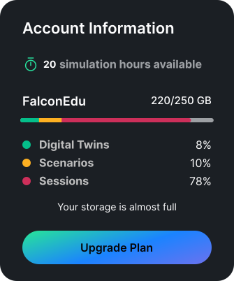
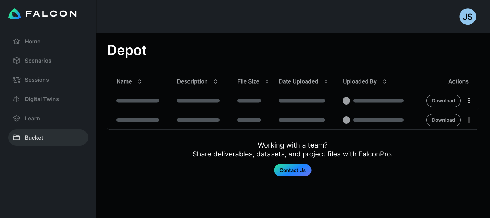

Digital Twin & Scenario Management Platform
A web platform for cloud simulation and digital twin sharing

The Challenge
Many users didn't have the high-end hardware required for the Unreal Engine native application. Enterprise users needed to share scenarios with each other, and documentation required a platform that was faster to update than the native application.
My Role
Designed the complete digital twin and scenario management web application from scratch, later adapting it to enable students and general consumers to use the product.
The Outcome
The web platform became the primary way users understand our simulation workflow. Enterprise teams can now share scenarios and run demos without high-end hardware, while students gained free access to professional tools. The terminology and information architecture established here became company-wide standards, adopted by the native editor, launcher, and documentation.
What Users Could Do

Run Simulation Sessions
Generate synthetic data from the web

Asset Management
Upload and download digital twins for use across scenarios

Scenario Library
Browse, create, and manage simulation scenarios

Documentation Hub
Access comprehensive guides and technical documentation

Organization Management
Manage team seats and user permissions per organization

Usage Insights
Track subscription tier limits and resource usage
Defining the System
2022-2023 - Building the Foundation
Strategic Insight: The web app was easier to update than the native UE application, making it ideal for training and onboarding.
Dashboard: Prioritize What Users Need Now
I designed the home screen to show what users need most frequently: active sessions (to remind them of ongoing simulation sessions), usage limits (to prevent mid-task interruptions), recent files (quick access without searching), and tutorials (onboarding support when needed). This eliminated unnecessary navigation and put critical information front and center.

Making Structure Visible
The session details page made our USD architecture explicit: every session must contain a space, and all digital twins exist within that space. This page was teaching users how our system was structured.

By visualizing the required structure (space → digital twins), users understood the system architecture through the interface itself.
Designing for Education Users
2024-2025 - Opening to Students
The Challenge
The product team wanted to expand our user base to 100+ monthly active users through education initiatives. My job: design features that would primarily support students without alienating enterprise customers or requiring credit cards upfront.
The Core Tension
Students expect free tools. But we couldn't just open the floodgates—we needed guard rails. The question: how do you design a freemium tier that feels generous while protecting business resources?
1. No Credit Card Required
Requiring payment information upfront would instantly turn students away. They'd rather find something entirely free than enter card details for a "trial."
Solution: Standard email sign-up with verification and a clear educational use clause: students could not use the platform for commercial purposes.

2. Soft Limits, Not Hard Blocks
This was our first time opening to the general public. We didn't know actual usage patterns yet—what if we set limits too low and frustrated legitimate users?
Approach: Display limits in the UI (250 GB downloads, 20 hours of cloud simulation) but initially track rather than enforce them. This let us learn actual behavior before deciding on hard restrictions.

3. Strategic Upsell Placement
The hardest design challenge: what if an enterprise customer lands on the webapp and thinks this limited freemium version is all we offer?
The insight from sales: Real enterprise customers don't come through self-service web sign-ups. They go through hands-on sales processes. The webapp is just for feature documentation and demos.
Solution: Place "Contact Sales" CTAs on enterprise-only features (like team collaboration) but don't make free users feel constantly sold to. The webapp could safely target students without worrying about losing enterprise customers.

The Outcome
Acquired 30-40 active education users through community challenges—well short of the 100+ goal, but valuable as a learning experiment.
The reality: There simply aren't enough use cases for the general public to train ML on vision data. The market for this tool remains specialized.
What Worked
- • No credit card requirement reduced friction
- • Soft limits let us learn without blocking users
- • Enterprise upsells didn't scare away students
What We Learned
- • Most students stayed well under limits
- • Potential enterprise users were still able to navigate the webapp to preview our capabilities for free under the EDU license and it did not diminish the value of the paid offerings
What I Learned
1. The Interface Teaches the System
This web platform became more than a tool—it fundamentally shaped how users understood our USD infrastructure. Every design choice about organizing digital twins or displaying scenarios was also teaching users our mental model.
2. Track Before You Block
Displaying limits (250 GB, 20 hours) without immediately enforcing them was the right call. We learned actual usage patterns before making restrictive decisions that could have frustrated legitimate users.
3. Enterprise and Consumer Are Different Products
My fear—that enterprise customers would see the freemium webapp and think that's all we offered—was unfounded. Sales validated that real enterprise customers come through hands-on processes, not self-service sign-ups.
Designing for students and designing for enterprise aren't competing goals if your go-to-market strategies are different. The webapp could safely target both audiences.
Impact
The web platform became the primary onboarding tool
Users now learn and evaluate the value of our product through the webapp before ever touching the native application
For Enterprise Users
- • Faster onboarding with web-based training
- • Stakeholder demos without installation
- • Centralized asset and scenario management
- • Team collaboration without hardware barriers
For Student Users
- • Free access to professional-grade tools
- • Learn synthetic data generation concepts
- • No hardware requirements to get started
- • Clear upgrade path for advanced needs
Reflection
Building this platform from scratch taught me that the interface is the product strategy . Every choice about how to present digital twins, organize scenarios, or structure permissions was also a choice about what our platform fundamentally was.
The student expansion attempt was humbling—it forced me to confront the gap between "users we designed for" and "users we wanted to reach." Sometimes the right answer isn't better design, it's acknowledging that you're solving a different problem entirely . Free with limits worked better than cheap because it aligned value with usage, not time.
Other Work
Building a Scenario Editor for Simulation
Designing an end-to-end MVP mockup to full product maturity, built on Unreal Engine.
Learn More